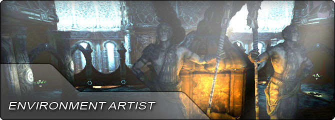

UDN
Search public documentation:
EnvironmentArtistHomeJP
English Translation
中国翻译
한국어
Interested in the Unreal Engine?
Visit the Unreal Technology site.
Looking for jobs and company info?
Check out the Epic games site.
Questions about support via UDN?
Contact the UDN Staff
中国翻译
한국어
Interested in the Unreal Engine?
Visit the Unreal Technology site.
Looking for jobs and company info?
Check out the Epic games site.
Questions about support via UDN?
Contact the UDN Staff
UE3 ホーム > 背景アーティスト
背景アーティスト

-
 コンテンツを「Unreal Engine 3」のために作成、インポートする FBX パイプラインの使用法に関するドキュメンテーションとチュートリアル。静的メッシュ - 骨格メッシュ - マテリアル - アニメーション - モーフターゲット。
コンテンツを「Unreal Engine 3」のために作成、インポートする FBX パイプラインの使用法に関するドキュメンテーションとチュートリアル。静的メッシュ - 骨格メッシュ - マテリアル - アニメーション - モーフターゲット。
- 入門編 : コンテンツ作成 - 「Unreal Engine 3」のためのコンテンツを作成する場合に必要となる最初の手順について。
- デザイン ワークフロー - Epic 社の内部デザイン ワークフローの概要。
- モデルの作成 - 「Unreal Engine 3」のためのモデルの作成に必要なアートアセットの解説。
- Pivot Painter (軸ペインター) ツール - モデルの頂点データの中にモデルの軸 (ピボット) と回転の情報を格納するためのツールです。
- FBX 静的メッシュ パイプライン - FBX 形式を使用して静的メッシュを作成、インポートする方法について解説。
- 静的メッシュのパイプラインのチュートリアル - 静的メッシュを作成およびインポートする際に役立つチュートリアル。
- ライトマップのための UV 座標のアンラッピング - ライトマップとともに使用するための UV 座標をセットアップする場合のベストプラクティス。
- 法線マップの加工 – 「Unreal Engine」で使用するために、法線マップを適切に加工する方法。
- モジュラー環境の作成 - モジュラー環境で使用するためのメッシュを設計する際に役立つガイド。
- 静的メッシュ エディタ ユーザーガイド - 「Unreal」エディタで静的メッシュ エディタを使用する方法に関するガイド。
- メッシュ単純化ツール - 「Unreal」エディタ内でパラメトリックに単純化されたメッシュを作成する方法に関するガイド。
- フラクチャーツール - 破砕静的メッシュの作成および使用に関するガイド。
- コリジョンのリファレンス - 静的メッシュと他タイプのジオメトリのコリジョン (衝突) タイプに関するリファレンス。
- コリジョンの技術ガイド - 「Unreal Engine 3」内でコリジョンがどのように機能するかということに関する技術ガイド。
- テクスチャ作成のヒント - 法線マップマテリアルとともに使用されるテクスチャを作成する際のヒント。
- テクスチャのインポートのチュートリアル - テクスチャを「Unreal Engine 3」に取り込むための方法。
- 法線マップ作成のテクニック - 法線マップを作成するための実用的なアドバイスとリソース。
- シェードマップ作成のテクニック - 3dsMax を使用してシェードマップを作成するためのガイド。
- MassiveLODJP[Massive LOD システム]] - Massive LOD システムを利用して「Unreal Engine 3」で広大な眺望を作成する方法について解説。
- プロシージャルによる建造物 - プロシージャルな建造物を作成するためのシステムについて解説。
- APEX Destruction (破壊表現) - APEX を使用して「Unreal Engine 3」で被破壊性背景を作成する方法について解説。
- コンテンツのプロファイリングと最適化 - コンテンツから最大のパフォーマンスを引き出すための秘訣について。
- モバイル用コンテンツの設計 - モバイルデバイス上で稼働させるコンテンツを設計する際の秘訣について。
- モバイル マテリアル - モバイル マテリアルを作成するためのレファレンス マニュアル。
- モバイル テクスチャ - モバイル デバイス上でテクスチャを扱うための情報。